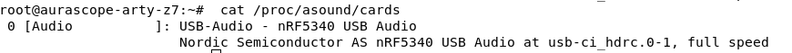

USB host + ALSA on the Zynq
The goal of this step
Turn the Zynq's USB0 controller into a working host port and teach the kernel enough
to recognise a USB Audio Class device on the end of it — so that when the nRF5340 Auracast
receiver is plugged in, aplay -l lists a sound card and ALSA can move audio.
Step 02 ended with the board booting, SSH working, and the receiver plugged into the USB host
port producing precisely nothing: no ttyUSB*, no ttyACM*, no sound
card. Part of that was power — the board was running off the JTAG connector, which can't
supply a downstream host port. But even with power fixed, nothing would have appeared,
because the software side of the USB host port didn't exist yet either.
Two halves, and both are mandatory
Enabling a peripheral on an SoC is always two separate assertions, made in two separate places, that have to agree:
- The device tree says this hardware exists, here is its address, here is how it's wired.
- The kernel config says the driver that knows how to talk to it is compiled in.
Half one — the device tree
Zynq-7000's USB0 is a ChipIdea controller with an external ULPI transceiver. Two nodes are
needed: an override on &usb0 to switch it on and put it in host mode, and the
PHY node it points at. Both went into the same
system-top.dts that step 02 established:
/* meta-aurascope/recipes-bsp/device-tree/files/system-top.dts */
&usb0 {
status = "okay";
dr_mode = "host";
usb-phy = <&usb_phy0>;
};
/ {
usb_phy0: phy0@e0002000 {
compatible = "ulpi-phy";
#phy-cells = <0>;
reg = <0xe0002000 0x1000>;
view-port = <0x0170>;
drv-vbus;
};
};
dr_mode = "host" is the important line: the controller is dual-role, and left to
itself it does not default to host. drv-vbus tells the PHY to actually drive VBUS
onto the port, which is what lets a downstream device power up at all — and is the reason the
power supply from step 02 matters even after the software is right.
No recipe changes were needed to carry this: the device-tree.bbappend written in
step 02 already prepends FILESEXTRAPATHS and pulls system-top.dts
in through SRC_URI, so editing the .dts is enough.
Half two — kernel config, made permanent
The tempting move here is bitbake -c menuconfig virtual/kernel, tick the boxes,
and move on. That works exactly once. The resulting .config lives in the work
directory and is destroyed by the next cleansstate, kernel version bump, or fresh
clone — and it leaves no trace in the repo explaining what was changed or why.
The reproducible form is a config fragment: a .cfg file of bare
CONFIG_* lines, delivered through SRC_URI, which the kernel recipe
merges into the defconfig at build time. It's in git, it's reviewable, and it survives
everything.
# meta-aurascope/recipes-kernel/linux/linux-xlnx_%.bbappend
FILESEXTRAPATHS:prepend := "${THISDIR}/${PN}:"
SRC_URI += "file://usb-host.cfg"
SRC_URI += "file://sound-core.cfg"
linux-xlnx_%.bbappend — the % is
a wildcard that matches whichever linux-xlnx_<version>.bb the BSP currently
selects. A bbappend named for a specific version silently stops applying the moment the BSP
moves to a new kernel, and a bbappend that stops applying is another silent failure with no
error attached to it. Same := discipline as the FSBL_FILE lesson in
step 02, for the same reason: THISDIR has to be captured at parse time.
usb-host.cfg — the controller stack
# meta-aurascope/recipes-kernel/linux/linux-xlnx/usb-host.cfg
CONFIG_USB=y
CONFIG_USB_CHIPIDEA=y
CONFIG_USB_CHIPIDEA_HOST=y
CONFIG_USB_EHCI_HCD=y
CONFIG_USB_EHCI_ROOT_HUB_TT=y
CONFIG_NOP_USB_XCEIV=y
CONFIG_USB_PHY=y
CONFIG_USB_ULPI=y
CONFIG_USB_STORAGE=y
| Symbol | Why it's here |
|---|---|
USB_CHIPIDEA | The Zynq-7000's USB IP is a ChipIdea core. Without this there is no driver for the controller at all. |
USB_CHIPIDEA_HOST | ChipIdea is dual-role; this is the half that does host. The device-tree dr_mode selects it, but only if it was compiled. |
USB_EHCI_HCD | ChipIdea's host side is EHCI-based and layers on the generic EHCI host controller driver. |
USB_EHCI_ROOT_HUB_TT | Transaction translator in the root hub — needed for full/low-speed devices on an EHCI controller with no companion UHCI/OHCI. |
USB_PHY, USB_ULPI | The PHY framework and ULPI support, matching the usb_phy0 node in the device tree. |
NOP_USB_XCEIV | Generic no-op transceiver the ChipIdea glue falls back on during probe. |
USB_STORAGE | Not needed for audio — but a USB stick is the cheapest way to prove the host port enumerates anything, independent of the nRF5340. |
sound-core.cfg — ALSA and the UAC driver
The image built so far had no sound subsystem whatsoever, so this is being added from zero.
The receiver presents itself as a standard USB Audio Class device, which means no bespoke
driver is needed — the generic snd-usb-audio handles it:
# meta-aurascope/recipes-kernel/linux/linux-xlnx/sound-core.cfg
CONFIG_SOUND=y
CONFIG_SND=y
CONFIG_SND_USB=y
CONFIG_SND_USB_AUDIO=y
Userspace — the part the kernel config doesn't give you
Enabling snd-usb-audio creates the device; it does not install a single tool to
look at it. Step 02 already hit the userspace version of this trap, where lsusb
turned out to be missing because usbutils was never in the image. Same fix,
applied ahead of time this round:
# meta-aurascope/recipes-core/images/aurascope-image.bb
IMAGE_INSTALL:append = " alsa-utils alsa-lib"
That brings aplay, arecord, amixer,
alsamixer and speaker-test onto the rootfs.
Rebuild
# once per shell session, from aurascope-yocto/ $ source poky/oe-init-build-env build # then from build/ $ bitbake virtual/kernel $ bitbake aurascope-image
Config fragments are easy to get wrong silently — a typo'd symbol, or a symbol whose dependencies aren't met, is simply dropped without complaint. So the check is not "did the build succeed" but "did these symbols actually survive into the config":
$ bitbake -e virtual/kernel | grep -E 'CHIPIDEA|EHCI_HCD|SND_USB'
SRC_URI change
is picked up on its own, but a stale sstate cache can hide it. bitbake -c cleansstate
virtual/kernel followed by a fresh bitbake virtual/kernel forces the issue.
The card shows up
With the board moved onto its 12 V supply and the JP5 jumper repositioned so
the USB host port can actually source VBUS, the receiver enumerates and Linux registers it as
a sound card:
root@aurascope-arty-z7:~# cat /proc/asound/cards
0 [Audio ]: USB-Audio - nRF5340 USB Audio
Nordic Semiconductor AS nRF5340 USB Audio at usb-ci_hdrc.0-1, full speed

USB-Audio means
snd-usb-audio bound it, so sound-core.cfg took.
usb-ci_hdrc.0-1 is the giveaway for the other half: ci_hdrc is the
ChipIdea host controller, so the &usb0 device-tree node and
usb-host.cfg both landed — the controller probed, came up in host mode, and
enumerated a device on port 1. Both halves, confirmed independently, from one command.
full speed is worth noting rather than worrying about: that's USB 1.1 signalling
at 12 Mbit/s, not the 480 Mbit/s the EHCI controller is capable of. It's the
receiver's choice, not a fault in the host — and it's normal for USB Audio Class devices,
which are specified to work at full speed. Stereo 48 kHz / 16-bit is about
1.5 Mbit/s, so there is a comfortable margin. If the streaming test in step 04 turns up
dropouts, though, this is the first number to come back and re-examine.
For completeness, the same check from the other direction — that the symbols really are in the running kernel rather than merely in the recipe:
$ zcat /proc/config.gz | grep -iE 'chipidea|ehci_hcd|snd_usb'
USB_STORAGE is doing in the config fragment.
Files
| Path | What it does | |
|---|---|---|
| changed | recipes-bsp/device-tree/files/system-top.dts | &usb0 host-mode override + usb_phy0 ULPI node |
| new | recipes-kernel/linux/linux-xlnx_%.bbappend | Pulls both config fragments into the kernel build, version-independently |
| new | recipes-kernel/linux/linux-xlnx/usb-host.cfg | ChipIdea + EHCI + ULPI PHY host stack |
| new | recipes-kernel/linux/linux-xlnx/sound-core.cfg | ALSA core + generic USB Audio Class driver |
| changed | recipes-core/images/aurascope-image.bb | Adds alsa-utils and alsa-lib to the rootfs |
Code
Commit 47a38cf · code: meta-aurascope